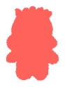
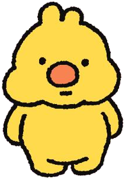
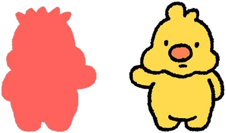
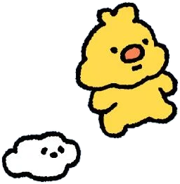
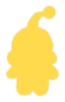

感情が、やってくる
うれしいことや、
いやなことがあると、
感情は向こうからやってきます。
ぺろっぺの世界では、
「自分」と「感情」を
べつべつの生きものとして描いています。

本来の自分心のなかで起きていることは、
目には見えません。
ぺろっぺの世界は、それをキャラクターに置きかえて、
そっと見えるようにしたものです。
自分のなかで、いろんな感情が
わいては消えていく。
静かなぺろっぺのまわりに、
感情たちがやってきては
去っていく。

うれしいことや、
いやなことがあると、
感情は向こうからやってきます。

感情は話しかけ、
ぶつかってきます。
それを感じるのは、自然なことです。

感情にのみこまれず、
ぺろっぺは静かに、
自分の道を進みます。
心理学者ロバート・プルチックは、
人の基本的な感情を8つにまとめ、
輪のように並べました。
ぺろっぺの世界の感情たちは、
この8つがもとになっています。
輪の中の感情をえらぶと、くわしい説明が見られます。

感情は、自分そのものじゃない。でも、感情があるから、自分を知っていける。
悲しいとき、悲しみは「あなた」ではなく、
あなたのところへ来た感情です。
感じることと、自分であることのあいだには、
ほんの少しの余白があります。
ぺろっぺの旅は、
その余白を思い出させてくれる物語です。
※ 感情の輪は、R. プルチックの「感情の輪」（1980）をもとに、ぺろっぺの世界向けにやさしく言いかえたものです。